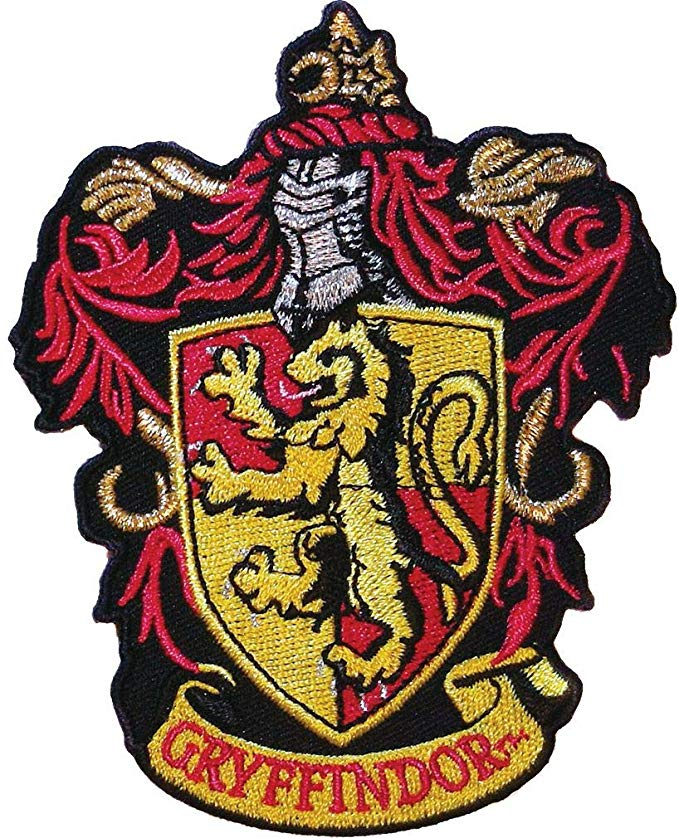
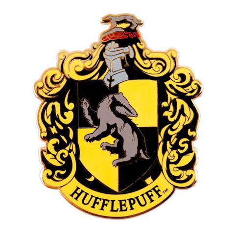
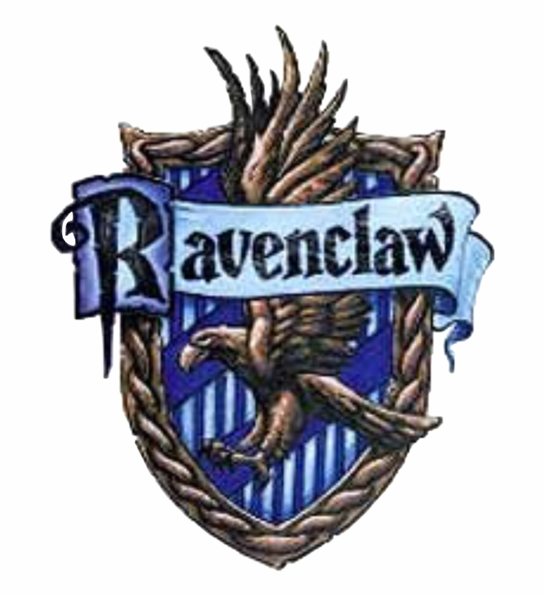
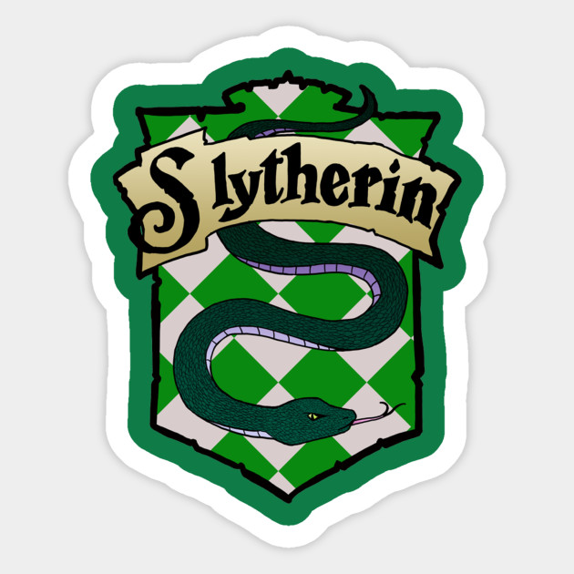

Gryffindor
Gryffindor values courage, bravery, nerve, and chivalry. Gryffindor's mascot is the lion, and its colours are scarlet and gold. The Head of this house is the Transfiguration Professor and Deputy Headmistress, Minerva McGonagall until she becomes headmistress, and the house ghost is Sir Nicholas de Mimsy-Porpington, more commonly known as Nearly Headless Nick. Gryffindor corresponds roughly to the element of fire. The founder of the house is Godric Gryffindor.
The Gryffindor common room is in one of the castle's highest towers, and its entrance is on the seventh floor in the east wing of the castle and is guarded by a painting of The Fat Lady, who is garbed in a pink dress. She permits entry only after being given the correct password.

Hufflepuff
Hufflepuff values hard work, patience, justice, and loyalty. The house mascot is the badger, and canary yellow and black are its colours. The Head of this house is the Herbology Professor Pomona Sprout, and the house ghost is the Fat Friar. Hufflepuff corresponds roughly to the element of earth. The founder of this house is Helga Hufflepuff.
The entrance to the Hufflepuff dormitories and common room entrance is concealed in a pile of large barrels in an alcove in the corridor that holds the kitchen. To enter, one must tap the barrel two from the bottom in the middle of the second row in the rhythm of "Helga Hufflepuff". Unlike any other house, the Hufflepuff common room has a repelling device that douses the illegal entrant in vinegar if the wrong lid is tapped or the rhythm is wrong. The Hufflepuff common room is filled with yellow hangings and fat armchairs and it has little tunnels leading to the dormitories, all of which have perfectly round doors, like barrel tops.

Ravenclaw
Ravenclaw values intelligence, creativity, learning, and wit. The house mascot is an eagle and the house colours are blue and silver. During the books, the head of this house is the Charms teacher, Professor Filius Flitwick, and the house ghost is the Grey Lady. Ravenclaw corresponds roughly to the element of air. The founder of this house is Rowena Ravenclaw.
The dormitories are in Ravenclaw Tower, on the west side of Hogwarts. The common room is round and filled with blue hangings and armchairs, has a domed ceiling painted with stars and features a replica statue of Rowena wearing her diadem. Ravenclaws have a spectacular view of the surrounding mountains. A logical riddle must be solved to gain entry, whereas the Gryffindor and Slytherin common rooms only require a password (Hufflepuffs need to tap a barrel in the rhythm of "Helga Hufflepuff"), indicating that it may be easier for those students from other houses who possess a high degree of intelligence to enter this common room than others.

Slytherin
Slytherin values ambition, cunning, leadership, and resourcefulness. The house mascot of Slytherin is the serpent, and the house colours are green and silver. The Head of House is Professor Severus Snape. The ghost of Slytherin house is The Bloody Baron. Slytherin corresponds roughly to the element of water. The founder of this house is Salazar Slytherin.
The Slytherin dormitories and common room are reached by speaking a password to a patch of bare stone wall in the dungeons, which causes a hidden door to open. The Slytherin common room is a long, low, dungeon-style room, under the Hogwarts Lake, furnished with green lamps and carved armchairs.